Kara Zor-El alias Kara Zor-el est une jeune kryptonniene. Après avoir dérivé pendant 24 ans dans la zone Phantom, elle a atterri sur Terre et a été aussitôt pris en charge par son cousin alias Kal-El, Superman : l'Homme d'acier qui va à être adopté par la famille Danvers. Elle avait pour mission de protéger son cousin, mais celui-ci est devenu entretemps un super héros respecté de tous. Une fois adulte, âgée de 24 ans, Kara est devenue une femme travaillant comme assistante auprès de Cat Grant qui est surnommée "la reine des médias", dans la ville de National City, située sur la côte Ouest des États-Unis. Elle cache ses pouvoirs à tous jusqu'au jour où une catastrophe inattendue va l'obliger à montrer sa véritable nature au public. Très vite, les habitants de National City ayant vu ses incroyables capacités la surnomment Supergirl.
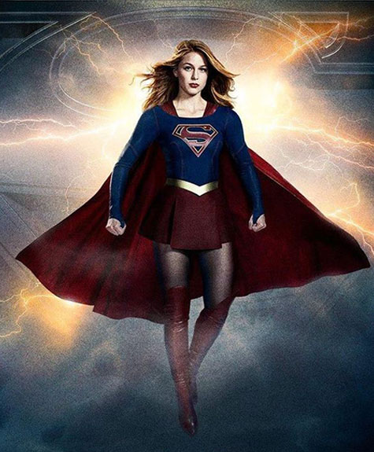
Les acteurs
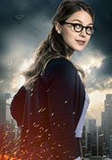
Kara Danvers << Supergirl >> alias Kara Zor-El
Kara Zor-El est une kryptonnienne envoyée sur Terre pour protéger son cousin lorsqu'elle avait 13 ans. Mais elle fut bloquée dans la Zone Fantôme et son cousin, Clark Kent, est devenu adulte et est aussi connu sous le nom de Superman. Alors placer par son cousin chez les Danvers, elle grandira comme une terrienne avec sa soeur adoptive Alex jusqu'à ce qu'un accident d'avion change la donne.
Kara est l'assistante de Cat Grant à Catco Worldwide Media.
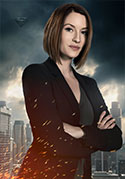
Alexandra << Alex >> Danvers
Alex Danvers est la soeur adoptive de Kara Danvers, ainsi qu'un agent de la D.E.O. Elle est jalouse lors de l'arrivée de Kara dans sa famille. Leur complicité a rapidement pris le dessus et Alex a toujours veillé sur sa petite soeur c'est aussi pour ce fait qu'elle a été recruté par la D.E.O.
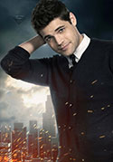
Winslow << Winn >> Schott
Winslow "Winn" Schott Jr. est un jeune homme passionné par les nouvelles technologies. Winn est le meilleur ami de Kara. Il l'aide dans sa mission en tant que Supergirl. Il se retrouve alors confronté à son père "Toyman" échappé de prison, c'est un moment assez difficile à vivre pour Winn dont la mère est décédée. Winn travaille officiellement en tant que technicien informatique à CatCo même si Cat Grant a tendance à oublier qu'il existe.
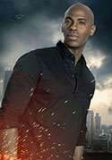
Jimmy << James >> Olsen
James Olsen est un photographe qui a travaillé au Daily Planet à Metropolis avec un certain Clark Kent. Il est aussi un des seuls à savoir que Clark est Superman. C'est son meilleur ami. Sur les conseils de Clark et pour s'éloigner de Lucy, il vient travailler à CatCo où il aidera Kara Danvers à devenir Supergirl tout en veillant sur elle comme lui a demandé Clark.
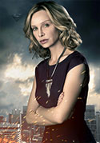
Catherine << Cat >> Grant
Catherine Grant est la directrice de CatCo. Alors qu'elle appelle toujours Kara "Kira", Kara devient peu à peu sa confidente. Cat aura de fort doute sur le fait que Kara soit Supergirl mais Kara ne lui confirmera jamais, allant jusqu'à utiliser tous les moyens pour lui prouver le contraire. Cat a deux fils: Adam qu'elle a eu jeune et qu'elle n'a pas vu grandir, c'est d'ailleurs Kara qui les rapprochera tous les deux, ainsi que Carter qui est un grand fan de Supergirl.
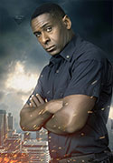
Hank << J'onn J'onzz >> Henshaw
J'onn J'onzz est un martien qui se cache sur Terre sous l'identité de Hank Henshaw, le directeur du D.E.O.
J'onn est né et a grandi sur la planète Mars. Il est issu d’une race capable de morphing, appelée Martiens verts. Il vivait une vie paisible avec sa femme et ses deux filles K’hym et Tan’ya. Sa vie idyllique a été interrompue lorsque leur planète a été envahie par les Martiens blancs. Ils ont anéanti les Martiens verts, y compris sa femme et ses filles, dans une sorte d’ « holocauste ». J'onn a toutefois pu s'échapper sur la terre.
Acteurs récurrents
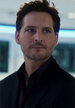
Maxwell Lord
Maxwell Lord est le dirigeant de Lord industries. Il voit en Supergirl et les autres aliens des ennemis de la race humaine.
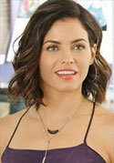
Lucy Lane
Lucy Lane est la petite amie de James Olsen. Cat Grant lui offre de travailler pour elle comme conseillère juridique.
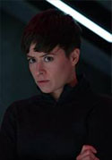
Agent Vasquez
L'agent Vasquez est un membre du D.E.O.
Elle est l'agent du D.E.O. qui contrôle les écrans principaux dans la salle principale. Il semble que ce soit elle qui donne toutes les informations à Hank Henshaw. Lorsque J'onn J'onzz sera interrogé par James Harper, Supergirl lui demandera si elle peut l'aider pour écouter car la pièce brouille sa super-ouïe. L'agent Vasquez lui dit qu'elle ne peut pas mais laisse en évidence son oreillette pendant qu'elle s'éloigne.
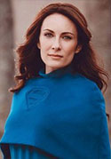
Alura Zor-El et Astra
Alura Zor-El est la mère de Kara. Alura Zor-El est la mère de Kara. Elle et son mari, Zor EL ont envoyé leur fille sur Terre pour la sauver. Elle donne son collier à sa fille Kara juste avant que le vaisseau ne parte et que Krypton explose. La soeur adoptive, Alex, a récupéré dans le vaisseau de Kara, une I.A. holographique de sa mère pour qu'elle puisse échanger et discuter.
Astra est la tante de Kara. Astra In-Ze est la tante de Kara et aussi la soeur jumelle d'Alura. C'est une Kryptionienne et la femme de Non.
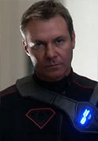
Non
Non est un kryptonien qui fait partie de la rébellion de Astra, sa femme.
Après la mort d'Astra, Non prend le commandement de la rébellion et tente de détuire Supergirl et National City encore et encore.
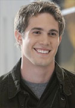
Adam Foster
Adam Foster est le fils ainé de Cat Grant. Elle l'a laissé vivre avec son père pour développer sa carrière mais le regrette tous les jours.
La série
Une série télévisée américaine intitulée Supergirl reprenant l'univers du DC Comic. Pour commencer elle a été réalisée par Glen puis a été développée par Ali Adler et les producteurs Andrew Kreisberg & Greg Berlanti. Elle est recommandée par Netflix.